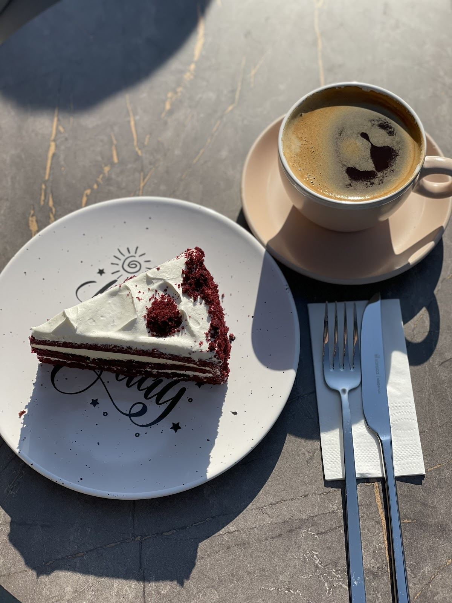

Bir fincanla başlayın.
Türk kahvesi, buzlu americano, latte ve mocha.
METROPARK SEFAKÖY · İSTANBUL
Kruvasan, kahve ve tatlı.
Günün en güzel bahanesi Mons’ta buluşmak.
Sabah kahvesinden
akşam sohbetine.

MONS’TAN BİR SEÇKİ
İster kruvasanla başlayın, ister tatlıya yer ayırın.
BULUŞMA NOKTANIZ
Metropark Sefaköy’de,
güne kısa bir ara.
GOOGLE YORUMLARI
“Açıldığından beri hizmet konusunda favorimiz. Çalışanlar çok cana yakın, ürünler gayet iyi.”
Özge Kocadağlı (ZgKcd)
Google yorumunu aç ↗“Taze ve çok güzeldi. Sıcak geldi. Çalışanlar çok ilgili. Çok memnun kaldık.”
ALEYNA EMRECİKSİN
Google yorumunu aç ↗Google’dan kısa alıntılar. Puan ve yorum sayısı kontrol tarihindeki kaydı yansıtır.
Her gün 08.00–01.00
@caffemons ↗Ziyaret öncesi güncel saatleri işletmeden kontrol edebilirsiniz.